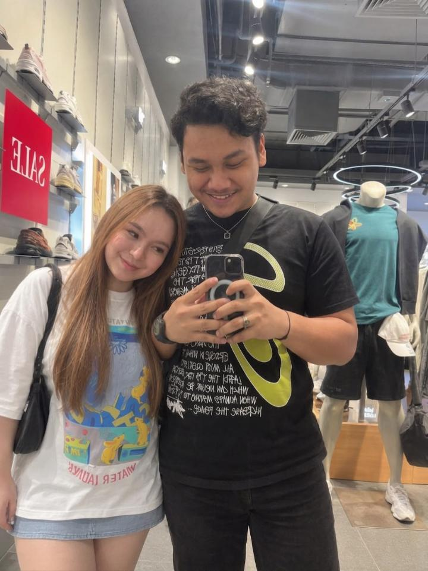

Hai, cowok kesayanganku.
Ada sesuatu yang aku buat khusus buat kamu.
Walaupun jarak memisahkan kita,
semoga halaman kecil ini membuatmu merasa dekat denganku. ❤️
Untuk Candra, dari Ayu ♡

Sayang, aku membuat halaman kecil ini supaya kamu punya
sesuatu untuk dibuka saat merindukanku.
Memang nggak mudah menjalani hubungan jarak jauh.
Ada saatnya aku ingin berada di sampingmu, menggenggam
tanganmu, atau sekadar melihatmu secara langsung.
Tapi untuk sekarang, kita punya doa, kepercayaan,
kabar kecil, dan kesabaran untuk menjaga hubungan ini.
Jarak boleh memisahkan tempat kita berada,
tapi semoga nggak membuat kita berhenti saling mendekat. ❤️
Pesan kecil untuk Candra 💗
Klik satu per satu ya, sayang.
Candra, terima kasih sudah hadir di hidupku.
Aku senang bisa mengenalmu lebih dekat.
Aku nggak meminta hubungan yang selalu sempurna.
Aku hanya ingin kita sama-sama belajar, saling memahami,
dan tetap memilih satu sama lain meski ada hari yang nggak mudah.
— Ayu, dengan sayang ♡
Kalau kamu lagi kangen aku, bayangin aku sedang senyum kecil
sambil memikirkanmu juga.
Walaupun aku belum bisa memelukmu sekarang,
kirimkan kangennya lewat pesan atau telepon ya, sayang.
Aku juga kangen kamu. ❤️
Sini, peluk virtual dulu 🤍
Kalau malam ini kamu merasa sepi karena aku nggak ada
di sampingmu, ingat bahwa di tempat yang berbeda,
ada aku yang juga memikirkanmu.
Mungkin kita melihat langit dari kota yang berbeda,
tapi kita tetap berada di bawah langit yang sama.
Semoga suatu hari nanti, malam-malam seperti ini
bisa kita ganti dengan waktu bersama.
Selamat istirahat, cintaku. ❤️
Kalau hari ini terasa berat, kamu nggak harus selalu kuat.
Istirahat sebentar juga nggak apa-apa.
Aku mungkin nggak bisa menyelesaikan semua masalahmu,
tapi aku mau mendengarkan dan mendukungmu sebisaku.
Jangan lupa jaga diri ya, sayang. 🌷
Terima kasih sudah menjadi bagian dari ceritaku.
Aku tahu hubungan jarak jauh nggak selalu mudah.
Akan ada rindu yang nggak bisa langsung dipeluk,
dan hari-hari saat kita hanya bisa saling menyapa lewat layar.
Tapi aku ingin kita terus berusaha, saling percaya,
jujur, dan saling menguatkan.
Jarak ini adalah bagian dari perjalanan kita,
bukan ukuran seberapa besar rasa sayangku.
Semoga suatu hari nanti kita bisa bertemu dan
membuat lebih banyak kenangan bersama.